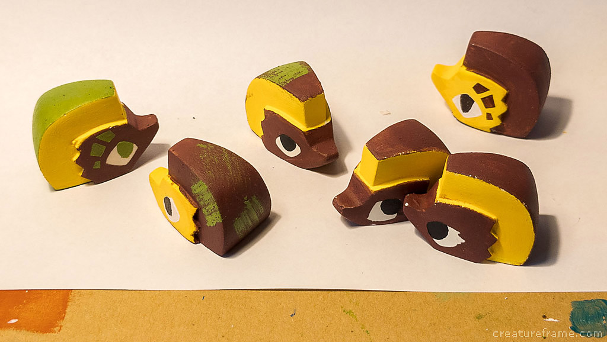
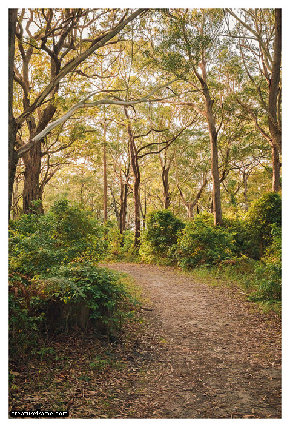
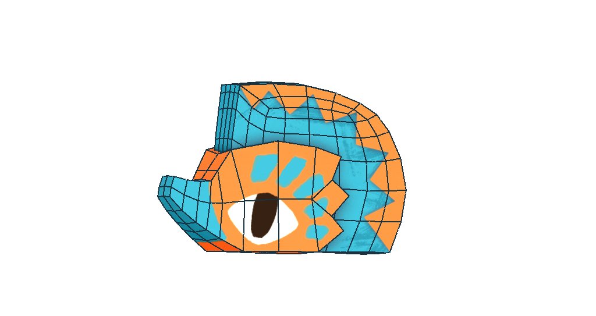
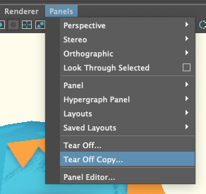
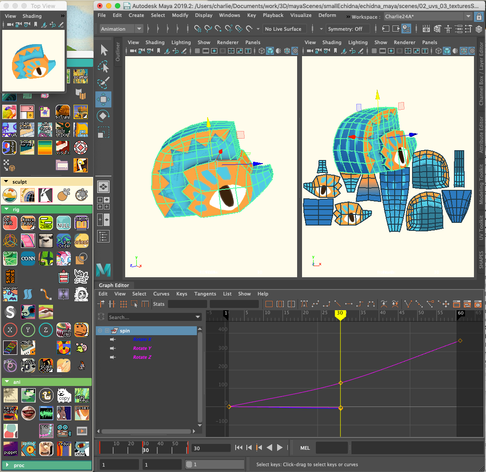

i got back into making little toys, and managed to finish up a few old projects. here's the first batch of six echidnas, laboriously hand-cast and painted, and each one is a little different.
half of them have found homes already, i might chuck the remaining 3 up for sale online at some point. all these guys've been claimed now

this was a project i initially started in 2020 during the fires.
i hadn't lived in my childhood home since i was 15. it was a weird year.
i grew up dealing with bushfires annually, often caused by arson. most summers we'd evacuate. one times it got close enough we could see the flames from the house. every resident in the hamlet was part of the volunteer brigade.
it effected my sleep for years, shocking i know /s. i spent every night staring at the curtains, thinking the flickering light of every passing car in the distance was a an encroaching torrent of flame. i tricked myself into thinking i could smell smoke at all hours of the day.
the 2020 fires felt like going through the motions, spent those days getting super high and clearing ton after ton of brush and fallen boughs, creating firebreaks, soaking the ground. the fires had been hovering for a few days some 12km away, but the weather prediction was that severe winds would pick up the following day and the whole tiny village would be pincered by the fires. the only plan was to try and hold it off, and if it broke through we'd all go stand in the ocean.
the wind changed. it flared up as predicted, but tore past and wrecked a different area.
there's a lot more, and i'm still angry about the funding and what happened to nearby victims of it, but that's a story for later
anyway, echidnas are pretty common around the area. they're fun to watch, and i'll always find it entertaining trying to get in under their armpits to pick them up (never succeeded).
one time we stopped to help one cross the road, only a few weeks after a bushfire, all its back spikes were burnt down to short hollow stubs. it'd buried itself and let the fires pass over
i hadn't lived in my childhood home since i was 15. it was a weird year.
i grew up dealing with bushfires annually, often caused by arson. most summers we'd evacuate. one times it got close enough we could see the flames from the house. every resident in the hamlet was part of the volunteer brigade.
it effected my sleep for years, shocking i know /s. i spent every night staring at the curtains, thinking the flickering light of every passing car in the distance was a an encroaching torrent of flame. i tricked myself into thinking i could smell smoke at all hours of the day.
the 2020 fires felt like going through the motions, spent those days getting super high and clearing ton after ton of brush and fallen boughs, creating firebreaks, soaking the ground. the fires had been hovering for a few days some 12km away, but the weather prediction was that severe winds would pick up the following day and the whole tiny village would be pincered by the fires. the only plan was to try and hold it off, and if it broke through we'd all go stand in the ocean.
the wind changed. it flared up as predicted, but tore past and wrecked a different area.
there's a lot more, and i'm still angry about the funding and what happened to nearby victims of it, but that's a story for later
anyway, echidnas are pretty common around the area. they're fun to watch, and i'll always find it entertaining trying to get in under their armpits to pick them up (never succeeded).
one time we stopped to help one cross the road, only a few weeks after a bushfire, all its back spikes were burnt down to short hollow stubs. it'd buried itself and let the fires pass over
concepting

this guy was a really fun one to design. i thought that i'd pretty quickly run out of directions to go in, especially with trying to pare it down into as few geometric shapes as i could get away with. but i ended up getting a lot of mileage out of it and had quite a few that i liked. made it hard to choose which way to go with it, which is a great problem to have
3D model

UVs and texturing was unnecessary, but i was thinking it might make it easier to plan out final palettes and patterns. it wasn't really helpful and a sketch would've sufficed just as well, as most of that work needs to be figured out while doing the actual paint mixing.
it's kinda tricky trying to keep a sense of scale when working digitally. i knew the snout especially could be a problematic bit that would break when demoulding if it was too thin.
i'll usually tear off a copy of my working window and shrink it down to roughly the size i'm planning the final print to be, to get a better idea of what the final's going to look like.
despite this, expect surprises every time. and because i hate making things easy for myself i still managed to make the finished snout only a few mm wide hahaha
it's kinda tricky trying to keep a sense of scale when working digitally. i knew the snout especially could be a problematic bit that would break when demoulding if it was too thin.
i'll usually tear off a copy of my working window and shrink it down to roughly the size i'm planning the final print to be, to get a better idea of what the final's going to look like.


despite this, expect surprises every time. and because i hate making things easy for myself i still managed to make the finished snout only a few mm wide hahaha

what'd i learn for next time :
i can't remember a whole lot of the modelling / molding / casting process, as that was all done in 2020, pretty much everything outside of painting them. but i do have some notes for myself to remember in future :
- the edges around the head are way too tiny a space, making painting them a huge timesink. trying to get such a chunky pigment into the crevices, much less with clean lines, was a pain in the ass with every layer of paint, even after the base layers were filled
-
this is my only "no-cuts" mold to date and boy is it great. way less cleanup and sanding after demoulding each echidna, compared to all my other figures which can each take anywhere from 15 to 80+ minutes to clean up. really want to design more molds like this

- in the end wish i'd leaned a bit more into more stylisation instead of the more broadly cute angle i went for. though on the other hand, i think that would've had its own issues in making details readable at such a small size
cool, onto more things
oh and a million thankyous to the cool guy who let me use his shed for the last couple of months, wouldn't have been able to get any of this stuff done otherwise!
credits:
book pixel sprite by ReHoeass
book pixel sprite by ReHoeass